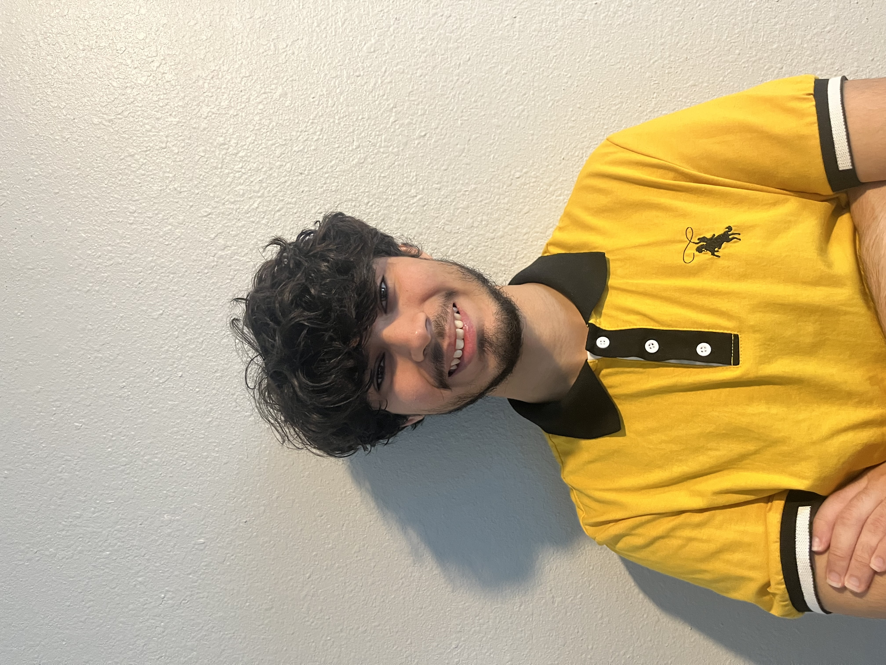

Hi, my name is Adrian Acosta-Cotto. I am studying at Seminole State College, soon to be in UCF, in a major for Digital Media. I have
many interests, with my biggest being the Netflix series "Hilda," which inspires me strive for a Digital Media career!
I also have experience in video editing and game design, making it so my skills can still be applied for working in a company
tailored to gaming or editing videos for a company, like advertisements or PSA's.
I believe my artistic ideas can inspire me to create catching designs for a company.
Depending on the target audience, I believe I can bring an imaginative scene to reflect many interests,
whether it'd be educational, business, or entertainment.